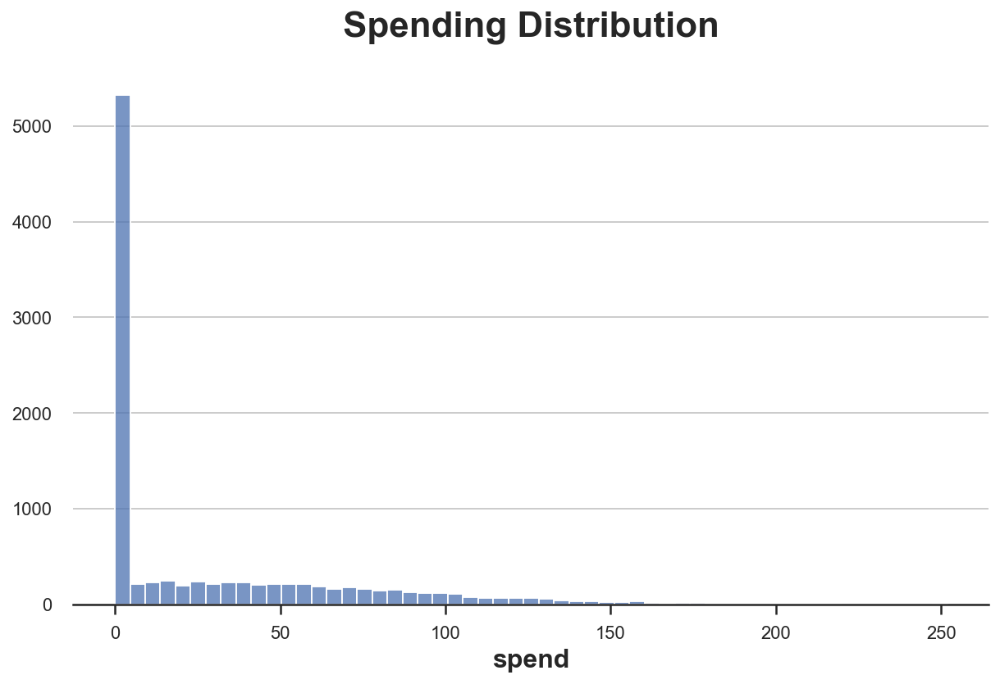
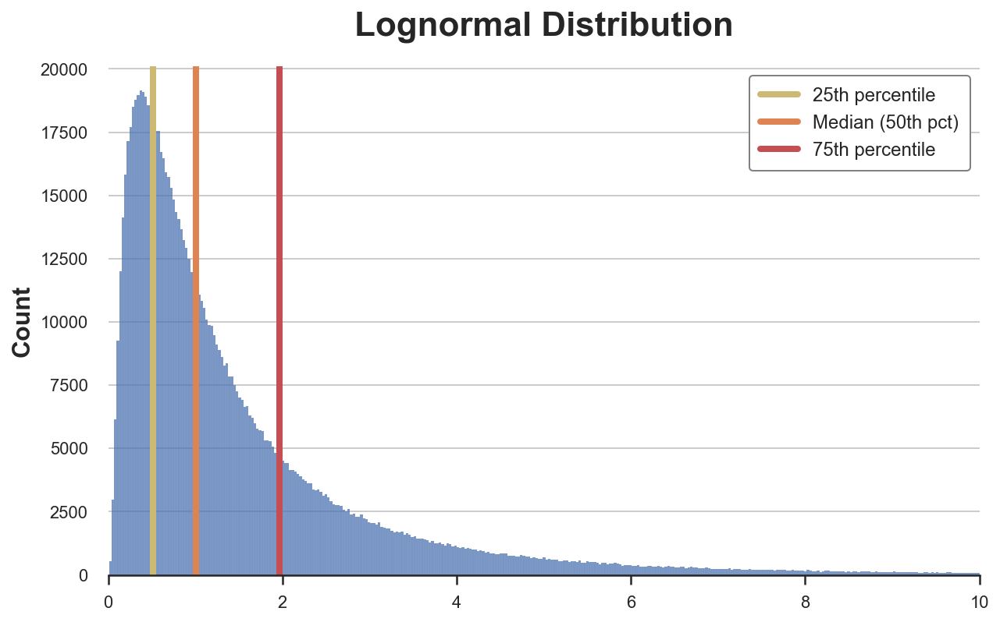
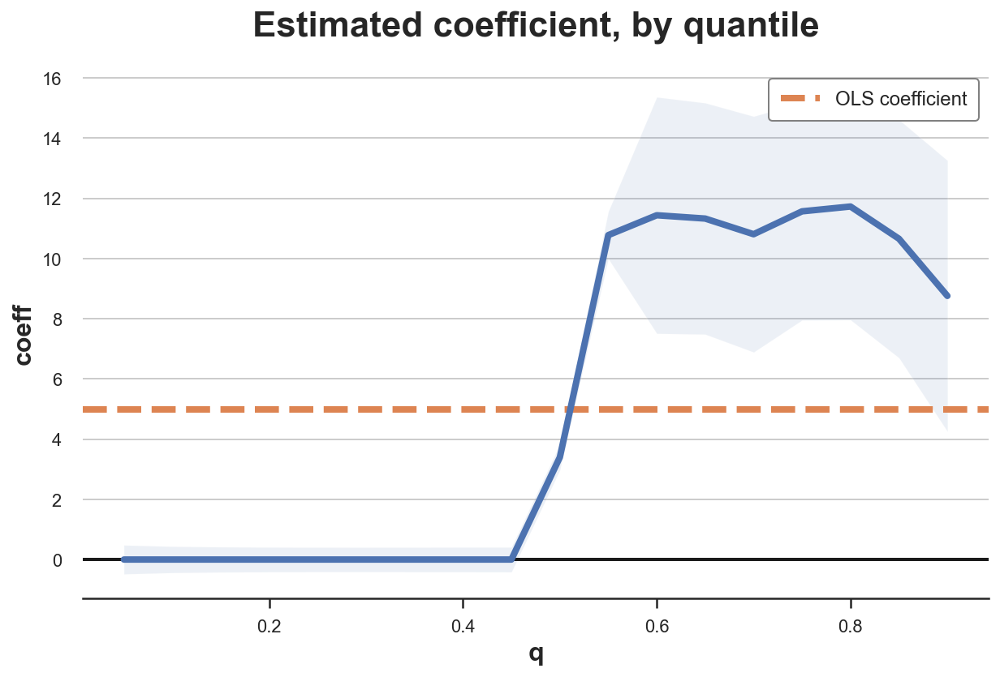
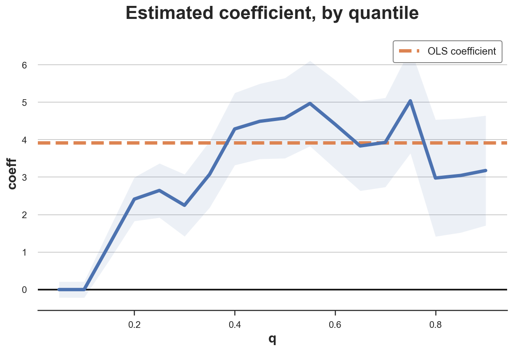

Mean vs Median Causal Effect

An introduction to quantile regression.
In A/B tests, a.k.a. randomized controlled trials, we usually estimate the average treatment effect (ATE): effect of a treatment (a drug, ad, product, …) on an outcome of interest (a disease, firm revenue, customer satisfaction, …), where the “average” is taken over the test subjects (patients, users, customers, …). The ATE is a very useful quantity since it tells us the effect that we can expect if we were to treat a new subject with the same treatment.
However, sometimes we might be interested in quantities different from the average, such as the median. The median is an alternative measure of central tendency that is more robust to outliers and is often more informative with skewed distributions. More generally, we might want to estimate the effect for different quantiles of the outcome distribution. A common use-case is studying the impact of a UI change on the loading time of a website: a slightly heavier website might translate in an imperceptible change for most users, but a big change for a few users with very slow connections. Another common use-case is studying the impact of a product change on a product that is bought by few people: do existing customers buy it more or are we attracting new customers?
These questions are hard to answer with linear regression that estimates the average treatment effect. A more suitable tool is quantile regression that can instead estimate the median treatment effect. In this article we are going to cover a brief introduction to quantile regression and the estimation of quantile treatment effects.
Loyalty Cards and Spending
Suppose we were an online store and we wanted to increase sales. We decide to offer our customers a loyalty card that grants them discounts as they increase their spend in the store. We would like to assess if the loyalty card is effective in increasing sales so we run an A/B test: we offer the loyalty card only to a subset of our customers, at random.
I import the data generating process dgp_loyalty() from src.dgp. I also import some plotting functions and libraries from src.utils. To include not only code but also data and tables, I use Deepnote, a Jupyter-like web-based collaborative notebook environment.
%matplotlib inline
%config InlineBackend.figure_format = 'retina'
from src.utils import *
from src.dgp import dgp_loyalty
Now, let’s have a look at the data. We have information on $10.000$ customers, for whom we observe their spend and whether they were offered the loyalty card. We also observe some demographics, like age and gender.
df = dgp_loyalty().generate_data()
df.head()
| loyalty | spend | age | gender | |
|---|---|---|---|---|
| 0 | 1 | 0.0 | 30 | Male |
| 1 | 0 | 0.0 | 26 | Male |
| 2 | 1 | 0.0 | 27 | Male |
| 3 | 1 | 0.0 | 29 | Male |
| 4 | 1 | 0.0 | 23 | Female |
Interestingly, we notice that the outcome of interest, spend, seems to have a lot of zeros. Let’s dig deeper.
Mean vs Median
Before analyzing our experiment, let’s have a look at our outcome variable, spend. We first inspect it using centrality measures. We have two main options: the mean and the median.
First of all, what are they? The mean captures the average value, while the median captures the value in the middle of the distribution. In general, the mean is mathematically more tractable and easier to interpret, while the median is more robust to outliers. You can find plenty of articles online comparing the two measures and suggesting which one is more appropriate and when. Let’s have a look at the mean and median spend.
np.mean(df['spend'])
28.136224
np.median(df['spend'])
0.0
How do we interpret these two numbers? People spend on average 28\$ on our store. However, more than 50% of people don’t spend anything. As we can see, both measures are very informative and, to a certain extent, complementary. We can better understand the distribution of spend by plotting its histogram.
sns.histplot(data=df, x="spend").set(ylabel='', title='Spending Distribution');

As previewed by the values of the mean and the median, the distribution of spend is very skewed, with more than 5000 customers (out of 10000) not spending anything.
One natural question then is: are we interested in the effect of the loyalty card on average spend or on median spend? The first would tell us if customers spend more on average, while the second would tell us if the average customer spends more.
Linear regression can tell us the effect of the loyalty card on average spend. However, what can we do if we were interested in the effect of the loyalty card on median spend (or other quantiles)? The answer is quantile regression.
Quantile Regression
With linear regression, we try to estimate the conditional expectation function of an outcome variable $Y$ (spend in our example) with respect to one or more explanatory variables $X$ (loyalty in our example).
$$ \mathbb E \big[ Y \big| X \big] $$
In other words, we want to find a function $f$ such that $f(X) = \mathbb E[Y|X]$. We do so, by solving the following minimization problem:
$$ \hat f(X) = \arg \min_{f} \mathbb E \big[ Y - f(X) \big]^2 $$
It can be shown that the function $f$ that solves this minimization is indeed the conditional expectation of $Y$, with respect to $X$.
Since $f(X)$ can be infinite dimensional, we usually estimate a parametric form of $f(X)$. The most common one is the linear form $f(X) = \beta X$, where $\beta$ is estimated by solving the corresponding minimization problem:
$$ \hat \beta = \arg \min_{\beta} \mathbb E \big[ Y - \beta X \big]^2 $$
The linear form is not just convenient, but it can be interpreted as the best local approximation of $f(X)$, referring to Taylor’s expansion.
With quantile regression, we do the same. The only difference is that, instead of estimating the conditional expectation of $Y$ with respect to $X$, we want to estimate the $q$-quantile of $Y$ with respect to $X$.
$$ \mathbb Q_q \big[ Y \big| X \big] $$
First of all, what is a quantile? The Wikipedia definition says
“In statistics and probability, quantiles are cut points dividing the range of a probability distribution into continuous intervals with equal probabilities, or dividing the observations in a sample in the same way. Common quantiles have special names, such as quartiles (four groups), deciles (ten groups), and percentiles (100 groups).”
For example, the 0.1-quantile represents the value that sits on the right of 10% of the mass of the distribution. The median is the 0.5-quantile (or, equivalently, the $50^{th}$ percentile or the $5^{th}$ decile) and corresponds with the value in the center of the distribution. Let’s see a simple example with a log-normal distribution. I plot the three quartiles that divide the data in four equally sized bins.
data = np.random.lognormal(0, 1, 1_000_000);
sns.histplot(data).set(title='Lognormal Distribution', xlim=(0,10))
plt.axvline(x=np.percentile(data, 25), c='C8', label='25th percentile')
plt.axvline(x=np.median(data), c='C1', label='Median (50th pct)')
plt.axvline(x=np.percentile(data, 75), c='C3', label='75th percentile')
plt.legend();

As we can see, the three quartiles divide the data into four bins, of equal size.
So, what is the objective of quantile regression? The objective is to find a function $f$ such that $f(X) = F^{-1}(y_q)$, where $F$ is the cumulative distribution function of $Y$ and $y_q$ is the $q$-quantile of the distribution of $Y$.
How do we do this? It can be shown with a little linear algebra that we can obtain the conditional quantile as the solution of the following minimization problem:
$$ \hat f(X) = \arg \min_{f} \mathbb E \big[ \rho_q (Y - f(X)) \big] = \arg \min_{f} \ (1-q) \int_{-\infty}^{f(x)} (y - f(x)) \text{d} F(y) + q \int_{f(x)}^{\infty} (y - f(x)) \text{d} F(y) $$
Where $\rho_q$ is an auxiliary weighting function with the following shape.

What is the intuition behind the objective function?
The idea is that we can interpret the equation as follows
$$ \mathbb E \big[ \rho_q (Y - f(X)) \big] = (1-q) \underset{\color{red}{\text{mass of distribution below }f(x)}}{\int_{-\infty}^{f(x)} (y - f(x)) \text{d} F(y)} + q \underset{\color{red}{\text{mass of distribution above }f(x)}}{\int_{f(x)}^{\infty} (y - f(x)) \text{d} F(y)} \overset{\color{blue}{\text{if } f(x) = y_q}}{=} - (1-q) q + q (1-q) = 0 $$
So that, when $f(X)$ corresponds with the quantile $y_q$, the value of the objective function is zero.
Exactly as before, we can estimate a parametric form of $f$ and, exactly as before, we can interpret it as a best local approximation (not trivially though, see Angrist, Chernozhukov, and Fernández-Val (2006)).
$$ \hat \beta_q = \arg \min_{\beta} \mathbb E \big[ \rho_q (Y - \beta X ) \big] $$
We wrote $\hat \beta_q$ to indicate that this is the coefficient for the best linear approximation of the conditional $q$-quantile function.
How do we estimate a quantile regression?
Estimation
The statsmodels package allows us to estimate quantile regression with the the quantreg() function. We just need to specify the quantile $q$ when we fit the model. Let’s use $q=0.5$, which corresponds with the median.
smf.quantreg("spend ~ loyalty", data=df).fit(q=0.5).summary().tables[1]
| coef | std err | t | P>|t| | [0.025 | 0.975] | |
|---|---|---|---|---|---|---|
| Intercept | 8.668e-07 | 0.153 | 5.66e-06 | 1.000 | -0.300 | 0.300 |
| loyalty | 3.4000 | 0.217 | 15.649 | 0.000 | 2.974 | 3.826 |
Quantile regression estimates a positive coefficient for loyalty. How does this estimate compare with linear regression?
smf.ols("spend ~ loyalty", data=df).fit().summary().tables[1]
| coef | std err | t | P>|t| | [0.025 | 0.975] | |
|---|---|---|---|---|---|---|
| Intercept | 25.6583 | 0.564 | 45.465 | 0.000 | 24.552 | 26.765 |
| loyalty | 4.9887 | 0.801 | 6.230 | 0.000 | 3.419 | 6.558 |
The estimated coefficient with linear regression is higher. What does it mean? We will spend more time on the interpretation of quantile regression coefficients later.
Can we condition the analysis on other variables? We suspect that spend is also affected by other variables and we want to increase the precision of our estimate by also conditioning the analysis on age and gender. We can just add the variables to the quantreg() model.
smf.quantreg("spend ~ loyalty + age + gender", data=df).fit(q=0.5).summary().tables[1]
| coef | std err | t | P>|t| | [0.025 | 0.975] | |
|---|---|---|---|---|---|---|
| Intercept | -50.5353 | 1.053 | -47.977 | 0.000 | -52.600 | -48.471 |
| gender[T.Male] | -20.2963 | 0.557 | -36.410 | 0.000 | -21.389 | -19.204 |
| loyalty | 4.5747 | 0.546 | 8.374 | 0.000 | 3.504 | 5.646 |
| age | 2.3663 | 0.026 | 92.293 | 0.000 | 2.316 | 2.417 |
The coefficient of loyalty increases when we condition the analysis on age and gender. This is true also for linear regresssion.
smf.ols("spend ~ loyalty + age + gender", data=df).fit().summary().tables[1]
| coef | std err | t | P>|t| | [0.025 | 0.975] | |
|---|---|---|---|---|---|---|
| Intercept | -57.4466 | 0.911 | -63.028 | 0.000 | -59.233 | -55.660 |
| gender[T.Male] | -26.3170 | 0.482 | -54.559 | 0.000 | -27.262 | -25.371 |
| loyalty | 3.9101 | 0.473 | 8.272 | 0.000 | 2.983 | 4.837 |
| age | 2.7688 | 0.022 | 124.800 | 0.000 | 2.725 | 2.812 |
There are a couple of things that we haven’t mentioned yet. The first one is inference. How do we compute confidence intervals and p-values for our estimates in quantile regression?
Inference
The asymptotic variance of the estimate $a$ of the quantile $q$ of a distribution $F$ is given by
$$ AVar(y) = q(1-q) f^{-2}(y) $$
where $f$ is the density function of $F$. This expression can be decomposed into two components: $q(1-q)$ and $f^{-2}(y)$.
The first component, $q(1-q)$, basically tells us that the variance of a quantile is higher the more the quantile is closer to the center of the distribution. Why is that so? First, we need to think about when the quantile of a point changes in response to a change in the value of a second point. The quantile changes when the second point swaps from left to right (or viceversa) of the first point. This is intuitively very easy if the first point lies in the middle of the distribution, but very hard if it lies at the extreme.
The second component, $f^{-2}(a)$, instead tells us that this side swapping is more likely if the first point is surrounded by a lot of points.
Importantly, estimating the variance of a quantile requires an estimate of the whole distribution of $Y$. This is done via approximation and it can be computationally very intensive. However, alternative procedures like the bootstrap or the bayesian bootstrap are always available.
The second thing that we haven’t talked about yet is the interpretation of the estimated coefficients. We got a lower coefficient of loyalty on spend with median regression. What does it mean?
Interpretation
The interpretation of linear regression coefficients is straightforward: each coefficient is the derivative of the conditional expectation function $\mathbb E[Y|X]$ with respect to one dimension of $X$. In our case, we can interpret the regression coefficient of loyalty as the average spend increase from being offered a loyalty card. Crucially, here “average” means that this holds true for each customer, on average.
However, the interpretation of quantile regression coefficients is tricky. Before, we were tempted to say that the loyalty card increases the spend of the median customer by 3.4\$. But what does it mean? Is it the same median customer that spends more or do we have a different median customer? This might seem like a philosophical question but it has important implications on reporting of quantile regression results. In the first case, we are making a statement that, as for the interpretation of linear regression coefficients, applies to a single individual. In the second case, we are making a statement about the distribution.
Chernozhukov and Hansen (2005) show that a strong but helpful assumption is rank invariance: assuming that the treatment does not shift the relative composition of the distribution. In other words, if we rank people by spend before the experiment, we assume that this ranking is not affected by the introduction of the loyalty card. If I was spending less than you before, I might spend more afterwards, but still less than you (for any two people).
Under this assumption, we can interpret the quantile coefficients as marginal effects for single individuals sitting at different points of the outcome distribution, as in the first interpretation provided above. Moreover, we can report the treatment effect for many quantiles and interpret each one of them as a local effect for a different individual. Let’s plot the distribution of treatment effects, for different quantiles of spend.
def plot_quantile_TE(df, formula, q, varname):
df_results = pd.DataFrame()
for q in np.arange(q, 1-q, q):
qreg = smf.quantreg(formula, data=df).fit(q=q)
temp = pd.DataFrame({'q': [q],
'coeff': [qreg.params[varname]],
'std': [qreg.bse[varname]],
'ci_lower': [qreg.conf_int()[0][varname]],
'ci_upper': [qreg.conf_int()[1][varname]]})
df_results = pd.concat([df_results, temp]).reset_index(drop=True)
# Plot
fig, ax = plt.subplots()
sns.lineplot(data=df_results, x='q', y='coeff')
ax.fill_between(data=df_results, x='q', y1='ci_lower', y2='ci_upper', alpha=0.1);
plt.axhline(y=0, c="k", lw=2, zorder=1)
ols_coeff = smf.ols(formula, data=df).fit().params[varname]
plt.axhline(y=ols_coeff, ls="--", c="C1", label="OLS coefficient", zorder=1)
plt.legend()
plt.title("Estimated coefficient, by quantile")
plot_quantile_TE(df, formula="spend ~ loyalty", varname='loyalty', q=0.05)

This plot is extremely insightful: for almost half of the customers, the loyalty card has no effect. On the other hand, customers that were already spending something end up spending even more (around 10/12\$ more). This is a very powerful insight that we would have missed with linear regression that estimated an average effect of 5\$.
We can repeat the same exercise, conditioning the analysis on gender and age.
plot_quantile_TE(df, formula="spend ~ loyalty + age + gender", varname='loyalty', q=0.05)

Conditioning on other covariates removes a lot of the heterogeneity in treatment effects. The loyalty card increases spending for most people, it’s demographic characteristics that are responsible for no spending to begin with.
Conclusion
In this article, we have explored a different causal estimand: median treatment effects. How does it compare with the average treatment effect that we usually estimate? The pros and cons are closely related to the pros and cons of the median with respect to the mean as a measure of central tendency. Median treatment effects are more informative on what is the effect on the average subject and are more robust to outliers. However, they are much more computationally intensive and they require strong assumptions for identification, such as rank invariance.
References
[1] R. Koenker, Quantile Regression (1996), Cambridge University Press.
[1] R. Koenker, K. Hallock, Quantile Regression, (2001), Journal of Economic Perspectives.
[2] V. Chernozhukov, C. Hansen, An IV Model of Quantile Treatment Effects (2005), Econometrica.
[3] J. Angrist, V. Chernozhukov, I. Fernández-Val, Quantile Regression under Misspecification, with an Application to the U.S. Wage Structure (2006), Econometrica.
Related Articles
Code
You can find the original Jupyter Notebook here:
https://github.com/matteocourthoud/Blog-Posts/blob/main/notebooks/quantile_reg.ipynb
I hold a PhD in economics from the University of Zurich. Now I work at the intersection of economics, data science and statistics. I regularly write about causal inference on Medium.